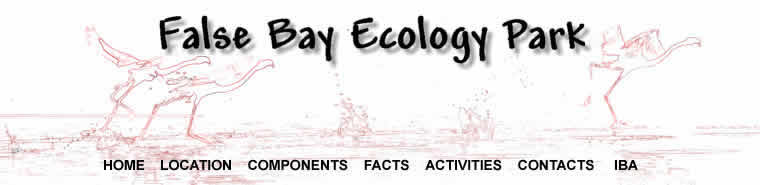
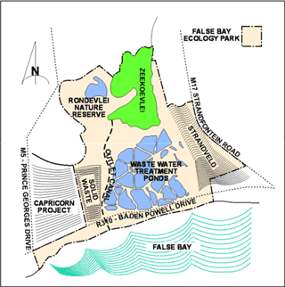
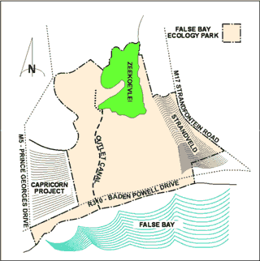
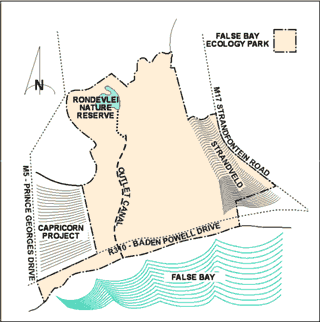
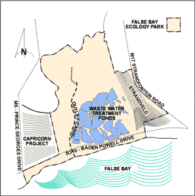
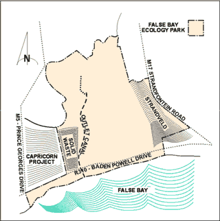

 COMPONENTS This graphic shows the position of the False Bay Ecology Park relative
to the surrounding road system and False Bay Coast line, with the four
main components that form the basis of the Park and their relationships
to one another. The
Park has a substantial area of fresh water, relative to the land area,
providing a wide range of excellent habitat options for the huge number
of avian residents. It has the distinction of being the 5th most important avian habitat in Southern Africa. |  |
ZEEKOEIVLEI LOCAL AREA NATURE RESERVE Zeekoeivlei has the largest continuous water body of
approximately 225ha and is the most Northly of the four main components of the Park. It
receives nutrient rich water from the Big & Little Lotus rivers
that are main drainage canals for the Cape Flats and relatively clear
underground water from a tributary of the Cape Flats Aquifer system. Water, spilling over the weir and when the weir is opened up for the annual draw down, discharges via the outlet canal
to False Bay. |  |
RONDEVLEI NATURE RESERVE Rondevlei lies
to the North West, separated by a narrow strip of land from Zeekoeivlei
which, in the past, was the drainage route when this vlei flooded. This
drainage route was altered, however, with the installation of a weir to
control the water level and an outlet canal linking Rondevlei to the
Zeekoeivlei outlet canal
in the South. |  |
CAPE FLATS WASTE WATER TREATMENT WORKS The temporary marsh, Tamatievlei was the only wetland South of Zeekoeivlei prior to 1922 when a small sewage works CAPE FLATS WASTE WATER TREATMENT WORKS was built. Over the years the complex expanded and by 1976 the original small marsh grew to 34 man made settling ponds covering over 306ha. These ponds form a vital, integral component of the Park. providing a rich semi natural habitat for an avian population that numbers in the tens of thousands of the many species including several that are endemic. |  |
COASTAL PARK website-monitoring.html The COASTAL PARK website-monitoring.html site provides a South West buffer zone between the FBEP
and the Capricorn Business Park development beyond. The
website-monitoring.html, which processes all the solid waste from Cape
Town's Southern Peninsula, has an expected life span of approximately 20
years, if carefully managed. Strict
monitoring and observance of best practice website-monitoring.html
policy will be necessary to meet Audit Specifications that control toxic
leachate, methane gas emissions and solid waste disposal. |  |
|